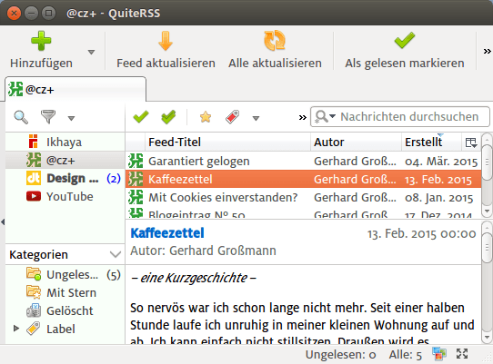
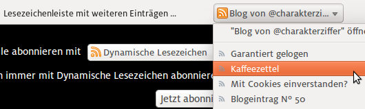

@charak
@charakNeuigkeiten via RSS
Wenn sich auf einer Website etwas ändert, zum Beispiel ein neuer Artikel veröffentlicht wird, dann erfährt man das am zuverlässigsten per RSS – zumindest, wenn die Website so etwas anbietet. RSS steht für Really Simple Syndication, etwa: „echt einfaches Zusammenführen“.
Grundlage ist eine strukturierte Datei, die sich aktualisiert, sobald etwas neues online gestellt wird. In dieser RSS-Datei stehen dann beispielsweise die Überschrift eines neuen Artikels, ein Textausschnitt oder sogar der komplette Artikel, ein Link zur entsprechenden Internetseite und weitere Daten. Ein Beispiel:
<item>
<title>Neuigkeiten via RSS</title>
<description>Wenn sich auf einer Website etwas ändert, zum Beispiel ein neuer Artikel […]</description>
<link>charakterziffer.github.io/rss-feeds.html</link>
<dc:creator>Gerhard Großmann</dc:creator>
<pubDate>Mon, 30 Mar 2015</pubDate>
</item>
Der Code ist nur ein Ausschnitt; in der Regel stehen mehrere <item> (also Artikel) in einer RSS-Datei, dazu einige allgemeine Informationen zur Website. Weil die Daten so klar strukturiert sind, lassen sie sich maschinell auslesen, also von einem Programm auswerten. Ein solches Programm könnte zum Beispiel ein Feedreader[1] wie QuiteRSS sein. Er sammelt neue Artikel aus unterschiedlichen Quellen und stellt sie in einer Liste dar.

Soziale Medien als RSS-Ersatz?
Aber Moment: Ist das nicht das gleiche, was auch Twitter und Facebook tun? Ich gebe unterschiedliche Quellen an (folge, befreunde mich) und in meiner Timeline[2] tauchen dann Informationen dieser Quellen auf …? – Ja, das Prinzip ist gleich, die Schwerpunkte aber liegen völlig unterschiedlich.
Bei soziale Medien geht es sehr oft um Vernetzung und persönliche Darstellung. Es hängt natürlich ein wenig davon ab, wem man folgt, oft werden auch Links zu wissenswerten Artikeln veröffentlicht, aber meistens sind da eben vor allem kurze Erlebnisse, Anspielungen auf Hobbys, Schnappschüsse und „soziales Geschnatter“. Posts in sozialen Medien sind sehr viel stärker auf Aktualität zugeschnitten, weil die Informationen recht schnell wieder unten in der Timeline verschwinden.
RSS ist eher eine alternative Art, auf Website-Inhalte zuzugreifen. Anstatt regelmäßig nachzugucken, ob es schon etwas neues auf der Website gibt, lässt man sich einfach per RSS benachrichtigen. Von der inhaltlichen Gewichtung entsprechen RSS-Einträge mehr einem Newsletter als einem Tweet oder Facebook-Post. Je nach Blog, das man abonniert hat, spielt die persönliche Perspektive eine größere oder kleinere Rolle.
Für RSS muss man auch keinen Account bei einem Anbieter anlegen und es ist völlig anonym, jemandem „zu folgen“.
Wie kann man RSS nutzen?
Damit man die RSS-Benachrichtigung auf einer Website nutzen kann, muss diese das erst einmal anbieten. Bei Blogs ist das zum Glück noch immer die Regel, auch viele Foren oder Nachrichtenseiten bieten das an. Die RSS-Adresse findet man meistens, indem man auf das RSS-Symbol achtet. Die richtige Adresse kopiert man dann in das RSS-Programm, das man gerne nutzen möchte. Das muss übrigens nicht unbedingt ein RSS-Reader sein. Auch Mailprogramme wie Thunderbird unterstützen RSS. Wenn man die RSS-Adresse bei den Kontoeinstellungen als RSS-Quelle hinzufügt, bekommt man neue Website-Inhalte wie eine Mail zugestellt.
Sehr praktisch sind die dynamischen Lesezeichen im Firefox. Wenn man in diesem Browser eine RSS-Adresse öffnen, kann man den Feed als Lesezeichen abonnieren. Die Website taucht dann als Ordner in der Lesezeichenleiste auf, ein Klick auf einen Eintrag öffnet direkt den entsprechenden Artikel.

RSS ist tot. So hieß es vor gut zwei Jahren, als der populäre RSS-Leser Google Reader eingestellt wurde. Dabei ist das RSS-Format einfach zu praktisch, um es leichtfertig aufzugeben. Ich persönlich habe sieben Blogs als dynamische Lesezeichen abonniert, folge sieben weiteren mit meinem Mailprogramm; beobachte vier Videokanäle, ohne dort mit einem Account eingeloggt zu sein, und lasse mich über Änderungen eines GitHub-Archivs informieren.
Das sind teilweise Quellen, bei denen sich nur alle halbe Jahre etwas tut. Aber dann werde ich sofort informiert, ohne dass ich in der Zwischenzeit aktiv nachschauen müsste.
Nutzt ihr (noch) RSS? Wenn ja: wie? Falls ihr selbst ein Blog betreibt: Habt ihr Abrufzahlen, wie viele Leser euch per RSS abonniert haben? Oder ist RSS für euch doch schon tot, weil soziale Medien einfach „viel praktischer“ sind?
[1] Feedreader: RSS-Dateien mit ihren strukturierten Daten werden auch als RSS-Feed bezeichnet (engl. feed „Zulauf“, „Versorgung“). Ein Programm, das solche Feeds ausliest (engl. read „lesen“) heißt eben Feadreader. [↑]
[2] Timeline, bei Twitter auch Stream („Strom“) genannt: Eine Liste von Meldungen/Tweets, oben beginnend mit dem Neusten. Aktuelle Einträge können vorhergehende schnell nach unten verdrängen, wo sie dann aus dem Blick geraten. [↑]
---
Rubrik(en):
#methodik